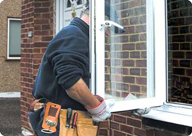

Для большинства людей такое понятие как пластиковое окно и стеклопакет являются одним и тем же, но, это совсем не так. Стеклопакет является одной из частей окна и может иметь два, и более стекол. Сама конструкция является герметичной и содержит в себе сухой воздух. Не менее популярным вариантом считаются изделия, состоящие из трех стекол. Между ними располагается перфорированная рамка, способствующая поглощению влаги внутри изделия, что не дает окну запотевать. Поэтому ремонт стеклопакетов в СПб, дешево выполнят не все квалифицированные специалисты. Срок подобных изделий довольно долгий, однако рано или поздно понадобиться их ремонт.
Наиболее распространенными видами ремонта стеклопакетов в СПб дешево являются:
- замена разбитого стекла
- смазка и чистка фурнитуры
- замена старой фурнитуры на новую
Зачастую какая-либо поломка возникает в результате того, что монтаж окна проводился с грубыми нарушениями. Но также она может произойти и вследствие постоянного нарушения правил эксплуатации изделия. Ремонт стеклопакетов в СПб дешево может понадобиться в офисах или в каких-либо производственных помещениях, потому как условия хранения продукции должны соответствовать всем нормам. Также следует помнить, что при обнаружении какой-либо неисправности следует обращаться за помощью к специалистам, дабы избежать еще больших поломок.